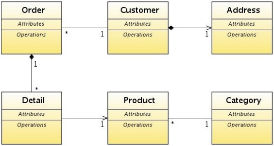
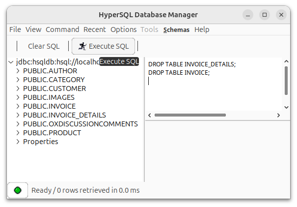

Curso: 1. Primeros pasos | 2. Modelo básico del dominio (1) | 3. Modelo básico del dominio (2) | 4. Refinar la interfaz de usuario | 5. Desarrollo ágil | 6. Herencia de superclases mapeadas | 7. Herencia de entidades | 8. Herencia de vistas | 9. Propiedades Java | 10. Propiedades calculadas | 11. @DefaultValueCalculator en colecciones | 12. @Calculation y totales de colección | 13. @DefaultValueCalculator desde archivo | 14. Evolución del esquema manual | 15. Cálculo de valor por defecto multiusuario | 16. Sincronizar propiedades persistentes y calculadas | 17. Lógica desde la base de datos | 18. Validando con @EntityValidator | 19. Alternativas de validación | 20. Validación al borrar | 21. Anotación Bean Validation propia | 22. Llamada REST desde una validación | 23. Atributos en anotaciones | 24. Refinar el comportamiento predefinido | 25. Comportamiento y lógica de negocio | 26. Referencias y colecciones | A. Arquitectura y filosofía | B. Java Persistence API | C. Anotaciones | D. Pruebas automáticas
Una entidad puede heredar de otra entidad. Esta herencia de entidades es una herramienta muy útil para simplificar tu modelo. Vamos a usarla para añadir una nueva entidad, Order (pedido), a tu aplicación invoicing.
Queremos añadir un nuevo concepto a la aplicación invoicing: pedido. Mientras que una factura es algo que quieres cobrar a tu cliente, un pedido es algo que tu cliente te ha solicitado. Estos dos conceptos están fuertemente unidos, porque cobrarás por las cosas que tu cliente te ha pedido y que tú le has servido.
Sería interesante poder tratar pedidos en tu aplicación y asociar estos pedidos con sus correspondientes facturas. Tal como muestra el siguiente diagrama UML:

Y con código Java:
@Entity
public class Invoice {
@OneToMany(mappedBy="invoice")
Collection<Order> orders;
...
}
@Entity
public class Order {
@ManyToOne
Invoice invoice;
...
}
Es decir, una factura tiene varios pedidos y un pedido puede referenciar a una factura.
¿Cómo es Order? Bien, tiene un cliente, unas líneas de detalle con producto y cantidad, un año y un número. Algo así como esto:

Curiosamente, este diagrama UML es idéntico al diagrama de Invoice. Es decir, para crear tu entidad Order puedes copiar y pegar la clase Invoice, y asunto zanjado. Pero, ¡espera un momento! ¿“Copiar y pegar” no era un pecado mortal? Hemos de encontrar una forma de reutilizar Invoice para Order.
Una manera práctica de reutilizar el código de Invoice para Order es usar herencia; además, es una excusa perfecta para aprender lo fácil que es usar la herencia con JPA y OpenXava.
En la mayoría de las culturas orientadas a objetos has de observar el precepto sagrado es un. Esto significa que no podemos hacer que Invoice herede de Order, porque una factura no es un pedido, y por la misma regla no podemos hacer que Order descienda de Invoice. La solución para este caso es crear una clase base para ambos, Order e Invoice. Llamaremos a esta clase CommercialDocument (documento comercial).
Aquí tienes el diagrama UML para CommercialDocument:

Y aquí tienes la misma idea expresada con Java:
public class CommercialDocument { ... }
public class Order extends CommercialDocument { ... }
public class Invoice extends CommercialDocument { ... }
Empecemos a refactorizar el código actual. Primero, renombra Invoice como CommercialDocument. Después, edita el código de CommercialDocument para declararla como una clase abstracta, así:
abstract public class CommercialDocument extends Identifiable { // Añadimos el modificador abstract
Queremos crear instancias de Invoice y Order, pero no queremos crear instancias de CommercialDocument directamente, por eso la declaramos abstracta.
Ahora, has de crear la entidad Invoice extendiéndola de CommercialDocument. Puedes ver el nuevo código de Invoice:
package com.yourcompany.invoicing.model;
import jakarta.persistence.*;
import lombok.*;
@Entity @Getter @Setter
public class Invoice extends CommercialDocument {
}
Invoice tiene ahora un código bastante breve, de hecho el cuerpo de la clase está, por ahora, vacío.
Este nuevo código necesita un esquema de base de datos ligeramente diferente. Adaptaremos la base de datos justo después de crear la entidad Order.
Gracias a CommercialDocument, el código para Order es más sencillo que el mecanismo de un sonajero:
package com.yourcompany.invoicing.model;
import jakarta.persistence.*;
import lombok.*;
@Entity @Getter @Setter
public class Order extends CommercialDocument {
}
Ahora las facturas y los pedidos se almacenarán en la misma tabla (la tabla CommercialDocument) usando una columna discriminadora. Por tanto, has de borrar las viejas tablas ejecutando las siguientes sentencias SQL:
DROP TABLE INVOICE_DETAILS;
DROP TABLE INVOICE;
Para ejecutar estas sentencias SQL, primero asegúrate de que tu aplicación se esté ejecutando, después ejecuta la clase DBManager dentro del paquete com.yourcompany.invoicing.tools en tu proyecto:

Después pega las sentencias DROP TABLE de arriba y pulsa en Execute SQL:

Ahora, reinicia tu aplicación, así se creará la nueva tabla preparada tanto para facturas como para pedidos. Después, aunque de momento la clase Order esté vacía, ya puedes usar el módulo Order desde tu navegador, y el módulo Invoice funciona como antes. Sí, a partir de ahora crear una nueva entidad con una estructura parecida a Invoice, es decir cualquier entidad para un documento comercial, es simple y rápido. Un buen uso de la herencia es una forma elegante de tener un código más simple.
El módulo Order funciona perfectamente, pero tiene un pequeño problema. El nuevo número de pedido lo calcula a partir del último número de factura, no de pedido. Esto es así porque el calculador para el siguiente número lee de la entidad Invoice. Una solución obvia es mover la definición de la propiedad number de CommercialDocument a Invoice y Order. Sin embargo, no lo vamos a hacer así, porque en la siguiente lección refinaremos la forma de calcular el número de documento; de momento simplemente haremos un pequeño ajuste en el código actual para que no falle. Edita la clase NextNumberForYearCalculator y en la consulta cambia “Invoice” por “CommercialDocument”, dejando el método calculate(), así:
public Object calculate() throws Exception {
Query query = XPersistence.getManager().createQuery(
"select max(i.number) from " +
"CommercialDocument i " + // CommercialDocument en vez de Invoice
"where i.year = :year");
query.setParameter("year", year);
Integer lastNumber = (Integer) query.getSingleResult();
return lastNumber == null?1:lastNumber + 1;
}
Ahora buscamos el número máximo de cualquier tipo de documento comercial del año para calcular el nuevo número, por lo tanto la numeración es compartida entre todos los tipos de documentos. Esto lo mejoraremos en la siguiente lección para separar la numeración de facturas y pedidos, y para tener un mejor soporte de entornos multiusuario.
Fíjate en que no has necesitado cambiar el nombre de ninguna propiedad de Invoice para hacer la refactorización. Esto es por el siguiente principio práctico: No uses el nombre de clase en los nombres de miembro, por ejemplo, dentro de una clase Account (cuenta) no uses la palabra “Account” en ningún método o propiedad:
public class Account { // No usaremos Account en los nombres de los miembros
private int accountNumber; // Mal, porque usa “account”
private int number; // Bien, no usa “account”
public void cancelAccount() { } // Mal, porque usa “Account”
public void cancel() { } // Bien, no usa “account”
...
}
Usando esta nomenclatura puedes refactorizar la clase Account en una jerarquía sin renombrar sus miembros y además puedes escribir código polimórfico con Account.
Hasta ahora, Order e Invoice son exactamente iguales. Vamos a hacerles su primera extensión, que consistirá en asociar Order con Invoice, como se muestra en el diagrama:
Solo necesitas añadir una referencia desde Order a Invoice:
package com.yourcompany.invoicing.model;
import jakarta.persistence.*;
import lombok.*;
@Entity @Getter @Setter
public class Order extends CommercialDocument {
@ManyToOne(fetch=FetchType.LAZY)
Invoice invoice; // Referencia a factura añadida
}
Por otra parte, en Invoice añadimos una colección de entidades Order:
package com.yourcompany.invoicing.model;
import java.util.*;
import jakarta.persistence.*;
import lombok.*;
@Entity @Getter @Setter
public class Invoice extends CommercialDocument {
@OneToMany(mappedBy="invoice")
Collection<Order> orders; // Colección de entidades Order añadida
}
Después de escribir este código tan simple, ya puedes probar estas relaciones recién creadas. Reinicia tu aplicación, abre tu navegador y explora los módulos Order e Invoice. Fíjate en que al final de la interfaz de usuario de Order tienes una referencia a Invoice. El usuario puede usar esta referencia para asociar una factura al pedido actual. Por otra parte, si exploras el módulo Invoice, verás una colección de pedidos al final. El usuario puede usarla para añadir pedidos a la factura actual.
Intenta añadir pedidos a la factura y asociar una factura a un pedido. Funciona, aunque la interfaz de usuario es un poco fea. No te preocupes, mejoraremos esto en la siguiente lección.
Esta lección te ha mostrado algunos ejemplos prácticos sobre cómo usar la herencia de Java con entidades JPA para simplificar tu código. Hemos usado la configuración por defecto de JPA para la herencia, aunque puedes refinar el comportamiento de JPA para la herencia con anotaciones como @Inheritance, @DiscriminatorColumn, @DiscriminatorValue, etc. Para aprender más acerca de la herencia en JPA puedes leer la documentación del apéndice B.
¿Problemas con la lección? Pregunta en el foro ¿Ha ido bien? Ve a la lección 8